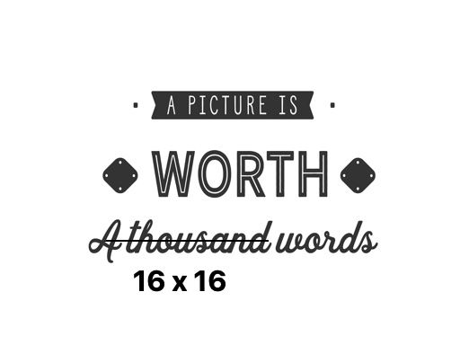

About Myself
A few interesting things about me. I love to learn, build and innovate with AI. Every day I push myself to learn something new, whether that be about AI, machine learning or data. When I am not learning about AI, I travel and follow my favorite soccer club Arsenal.
 Source: https://xkcd.com/
Source: https://xkcd.com/

A blog on Retrieval Augmented Generation (RAG) 🚀 Exploring what RAG is, how it improves AI capabilities, when to use rag over fine-tuning and why it's a key technique for building powerful and accurate language models.
Most of the existing object detection models are trained to identify a limited set of pre-determined classes. Adding new classes to the list of identifiable objects requires collecting and labeling new data and retraining the model again from scratch. The objective of Grounding DINO was to develop a strong system to detect arbitrary objects specified by human language inputs without the need to retrain the model, also known as zero-shot detection.
Prompt Engineering is a relatively new field that involves developing and optimizing prompts to efficiently use large language models (LLMs) for a wide variety of applications and research topics. In this blog, we will try to understand the basics of prompt engineering along with the popular prompt engineering techniques used by researchers and developers.
Generative AI can seem complex but it doesn't have to be. Sharing my latest medium blog on Introduction to Generative AI - which tries to break it down into simple terms for anyone, regardless of their technical background.
A step-by-step methodology to build a simple object detector using mobilenet SSD model and a laptop camera feed. The blog showcases how to feed the input image to a pre-trained model and visualize the detections.

A step-by-step methodology to build a simple object detector using YOLO and a webcam feed from your laptop to identify a specific object.

Deep dive into the groundbreaking world of Vision Transformers (ViTs), a revolutionary approach that's reshaping the landscape of computer vision and AI. In this blog, I will explain the steps involved in an object classification task using vision transformers.
Snorkel is a system for programmatically building and managing training datasets using the concept of weak supervision. This use cases demonstrates programtically labeling of text messages as spam or non-spam using snorkel.